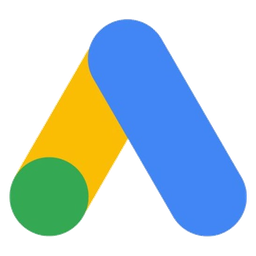
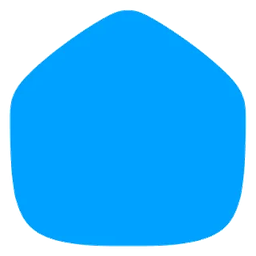

Portfolio · 2026.08
마케터의 언어로
병목을 듣고
개발자의 손으로 고치는
구병기입니다.
광고대행사에서 패션·홈퍼니싱·가전 브랜드를 월 1억 – 6억 규모로 운영했습니다.
제 업무를 자동화하는 것에서 시작해 팀의 도구로, 전사 발표로,
타 팀 브랜드 컨설팅으로 넓혀 왔습니다.
AI로 일하는 방식부터 보기
010-6340-3531 · goofee.9p@gmail.com
GOOFEE · AX CONSOLE
LIVE
AX 사내 교육 · 컨설팅
전사 발표 · 활용사례 공유 · 팀별 컨설팅 — 도구 3종 실무 적용
지누스 · GFA 매체 ROAS
1,120%
테스트 전 875% → 테스트 후 1,120%
미디어 믹스 — 매체가 브랜드로


매체 6종 상시 운영 · 브랜드 3사 + 협력 2사 · 월 1억 – 6억+
광고 운영 에이전트
광고 운영 흐름을 자동화
performance × automation × ai
소재 세팅2시간 → 10분
리뷰 분석10만 건 → 20분